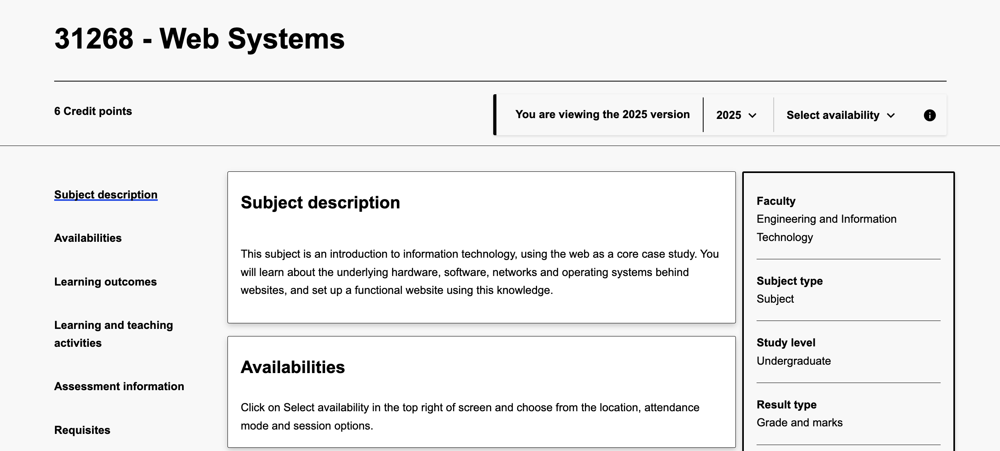

Web Systems is a university subject which is offered at the University Of Technology Sydney for undergraduate students.
It is a subject which provides an introductory foundation on the web and how to create a website, These skills allow us as students to learn how the web works and deepen our understanding of this while learning how to develop websites.
A few extra facts about it?
- The subject code for Web Systems is 31268, This is used to identify the subject in UTS.
- It is mainly taken in the first year of the university degree as it can be considered an introductory course.
- The content of the subject is focused on the history of the web and how it was developed over time, as well as the key features it has today.
- The subject also teaches students how to develop their own websites, which is a key skill in the rising use of the internet.
- The subject also teaches students about VIM and BASH programming which is inherently overlooked in our everyday lives as we never have been required to use it before.
